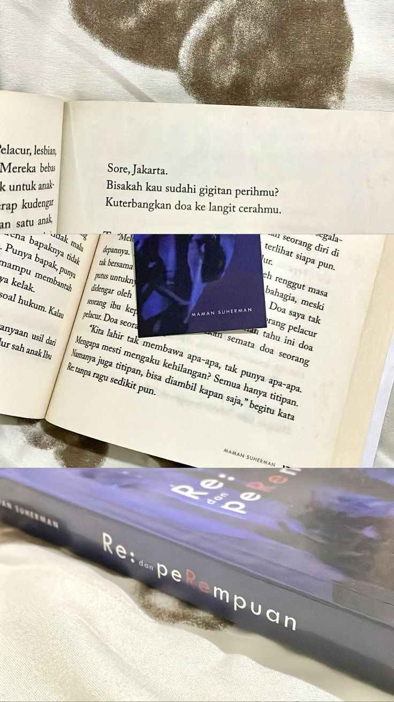
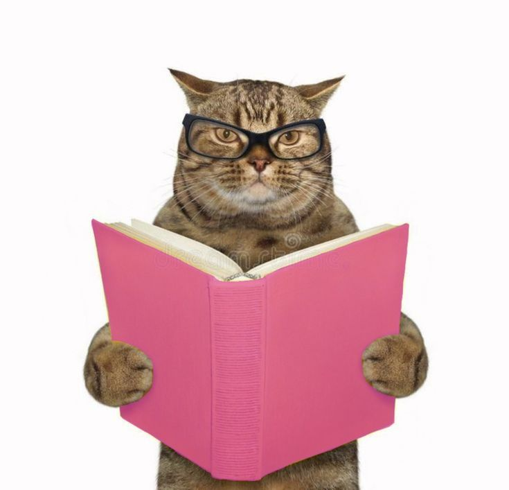
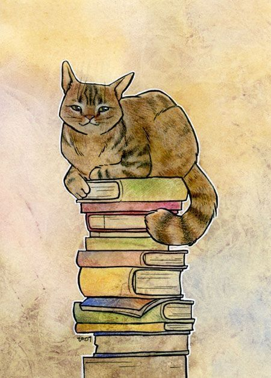

Best Books
of the Month
● ●

Pengungkapan Realitas

Keindahan Gaya Penulisan

Realita Yang Menyentuh Hati
Realita paling menyentuh dalam *Re: dan Perempuan* karya **Maman Suherman** adalah potret getir perempuan yang hidup tanpa pilihan. *Re:* digambarkan sebagai sosok yang terjebak dalam dunia pelacuran akibat kemiskinan dan tipu daya, sementara masyarakat hanya tahu menghakimi tanpa memahami. Ia menanggung stigma yang lebih kejam dari luka fisiknya, namun tetap berjuang sebagai ibu demi masa depan anaknya, *Melur*. Kisah ini juga menunjukkan bagaimana luka dan stigma bisa menurun ke generasi berikutnya, membuat Melur tumbuh dalam bayang-bayang masa lalu ibunya. Dengan bahasa yang penuh empati, Maman menulis bukan untuk mengadili, melainkan memahami. Melalui *Re:* dan *Melur*, pembaca diingatkan bahwa di balik tubuh yang dihakimi, selalu ada hati yang ingin dicintai dan dimaafkan.